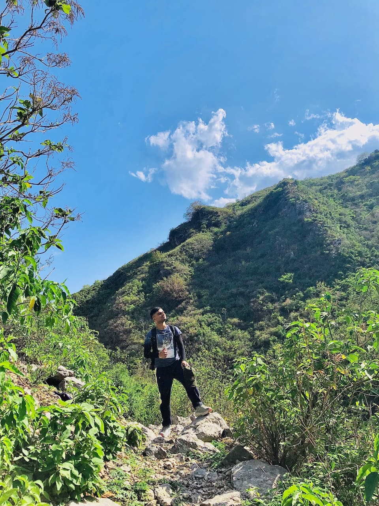
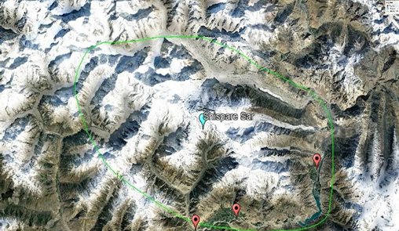

|
Muhammad Anser Sohaib Hi, I'm Anser! I'm a Software Engineer at Hazen.ai developing production ML models deployed across highway and community surveillance systems internationally. My research focuses on efficient AI systems, particularly quantization techniques for edge deployment and intelligent resource optimization. I investigate how to make advanced AI models truly deployable on edge devices through novel compression and security-aware optimization techniques. The challenge lies in universal accessibility and practical deployment across diverse hardware constraints. I find inspiration in nature’s resilience, often seeing reflections of it in the AI systems I aim to design. |
 |
|
★
Latest NewsJune 2025
Started as Associate Software Engineer at Hazen.ai, working on production ML models for surveillance systems.
July 2025
Three research papers submitted to top-tier conferences including NeurIPS 2025 and IEEE journals.
May 2025
Graduated with BSc Electrical Engineering from NUST with focus on AI and Machine Learning.
April 2025
Presented a Poster for my FYDP at Open House 2025
January 2022
Got tuition fee scholarship from NUST.
November 2021
Got admisison offer from NUST.
July 2021
Awarded a scholarship from ECAT.
|
ExperienceAssociate Software Engineer, Hazen.ai — Jun 2025 – Present
ML Intern, SoC Lab, SINES, NUST — Aug 2024 – Mar 2025
AI Intern, Global Resources — Jun 2024 – Aug 2024
|
Publications/Preprints

|

{kind=link}